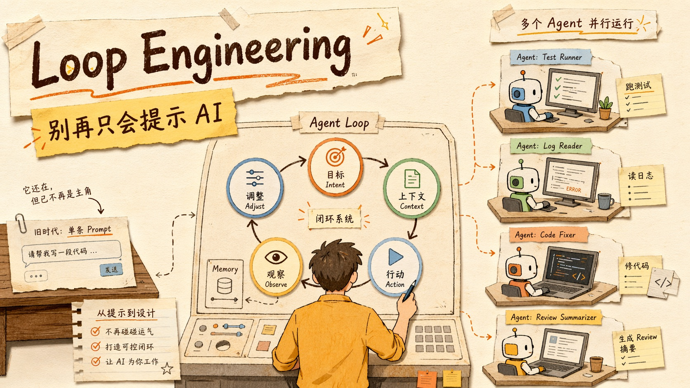
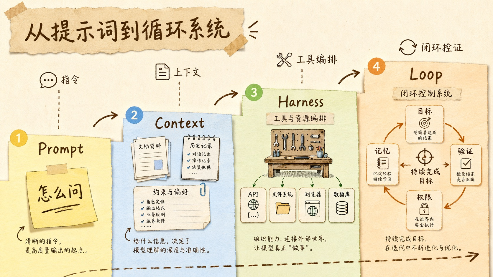
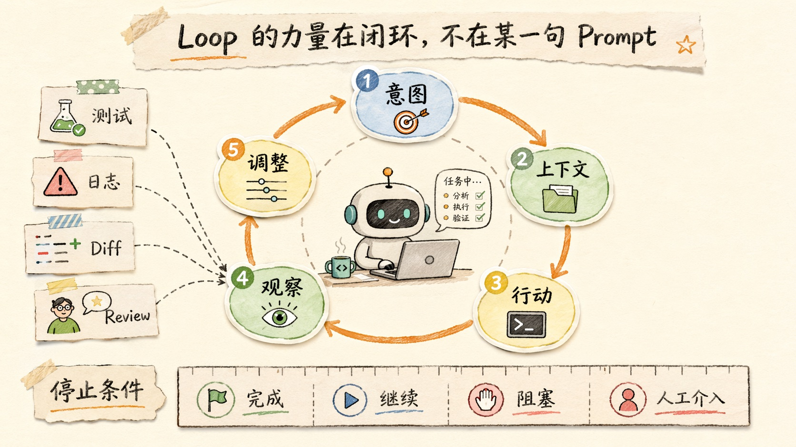
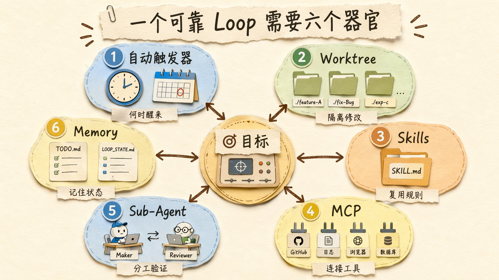
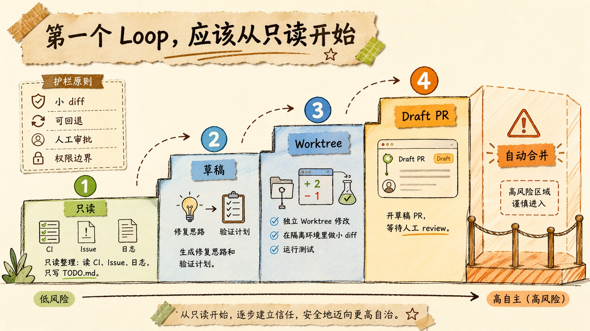

别再只会提示 AI 了：Loop Engineering 才是 Agent 时代真正的工程能力
前几天我看到菜鸟教程上架了一整套 AI Agent 教程，里面有一篇专门讲 Loop Engineering。
说实话，我第一反应有点恍惚。
菜鸟教程这个网站，在很多工程师心里是一个很特殊的存在。你第一次查 HTML，第一次抄 JavaScript 示例，第一次搞不懂 SQL 的 JOIN，很可能都打开过它。
它的 slogan 也很老派。
「学的不仅是技术，更是梦想。」
以前看这句话，多少有点中二。
但现在回头看，挺有意思的。因为到了 2026 年，连这样一个最朴素、最入门、最「抄代码就能跑」的网站，都开始把 AI Agent、Harness Engineering、Loop Engineering 放进教程导航里了。
这说明一件事。
Agent 这件事，已经从少数人的玩具，变成了普通工程师也绕不开的基本功。
而 Loop Engineering 这个词，恰好戳中了我最近很强的一个体感：我们一直以为自己在优化 Prompt，其实真正卡住的，是人类还在用手推进每一步。
你写一句 Prompt。
AI 回一句。
你看一眼。
再补一句。
它再改一版。
这个模式当然有用。过去两年，很多人的生产力就是这么涨起来的。
但你只要稍微做过一点复杂任务，就会发现它有一个很硬的天花板。
人，变成了循环里的慢部件。

Prompt 没死，它只是降级成了零件
先把一个误解说清楚。
Loop Engineering 不是说 Prompt Engineering 过时了。
恰好相反，一个烂 Prompt 放进 Loop 里，只会让系统更稳定、更快速地产出烂结果。
Prompt 仍然重要。
只是它不再是全部。
过去我们讲 Prompt Engineering，本质是在研究「怎么问 AI」。你把角色、任务、约束、输出格式写清楚，希望模型第一轮就给出更好的答案。
后来大家开始意识到，光会问还不够。你得给模型足够好的上下文。于是有了 Context Engineering：文档怎么塞、历史怎么保留、RAG 怎么检索、工具说明怎么放、哪些信息该进上下文，哪些信息不该进。
再往后，问题又变了。
模型不只是回答问题，它开始调用工具、编辑文件、跑测试、查日志、开浏览器、连数据库。你得把模型、工具、权限、数据源组织起来。这就是 Harness Engineering，更像是在给模型搭一个工作台。
但到了 Agent 真正开始干活以后，你会遇到下一个问题。
它不是「能不能做」。
是「能不能持续做，做错了能不能发现，发现以后能不能修，修到什么时候算完」。
这就是 Loop Engineering 出场的地方。
你想想看，一个真正有用的编程 Agent，不应该只是听你说「修一下测试」。
它应该自己读失败日志，定位相关文件，提出假设，改代码，跑测试，看错误，再改，再跑，直到测试通过，或者明确告诉你它被什么卡住了。
这一串动作里，每一步都有 Prompt。
但真正值钱的不是其中某一句 Prompt。
真正值钱的是这套闭环。

Loop 不是 while 循环，是一套目标系统
Loop Engineering 这个词听起来容易被误解。
很多人第一反应是，哦，不就是写个 while true，让 Agent 一直跑吗？
真不是。
一个坏的 Loop，确实可能就是无限循环。
它不停改文件，不停跑命令，不停解释自己为什么还没成功。你看着 token 一路燃烧，最后只得到一堆越来越离谱的 diff。
这不叫工程。
这叫空转。
一个好的 Loop 至少要有五件事。
目标。
它得知道成功是什么。不是「优化性能」这种大词，而是「把仪表盘首次加载时间降低 30%，同时现有筛选器行为不变」。
上下文。
它得知道当前任务相关的代码、日志、文档、历史决策、项目约束。没有上下文的 Agent，就像一个刚入职但没人带的同事，只能靠猜。
行动。
它要能编辑文件、运行命令、调用工具、读网页、查数据库。否则它只是一个会说话的旁观者。
观察。
它要能看到测试失败、类型错误、浏览器截图、CI 日志、Review 评论。观察不是装饰，观察是下一轮行动的燃料。
调整。
它要根据观察更新自己的计划，而不是死守第一版判断。第一次假设错了没关系，关键是错误能不能被系统吸收进下一轮。
这五件事连起来，才是一个 Loop。
Intent → Context → Action → Observation → Adjustment。
再回到 Intent。
看起来很简单。
但真要做可靠，难点全在细节里。
测试失败算不算失败？人工 Review 说「这里不太对」算不算阻断？Agent 连续三轮修不好，是继续烧 token，还是停下来问人？一个命令需要网络权限，是自动放行，还是要求人工审批？
这些问题都不是 Prompt 能单独解决的。
它们属于系统设计。

真正的 Loop 要有六个器官
菜鸟教程那篇文章里，把一个能独立运行的 Loop 拆成六个要素：自动触发器、Worktrees、Skills、Connectors/MCP、Sub-Agents、Memory。
这个拆法我觉得很对。
因为它不是在讲概念，而是在讲一个 Agent 系统到底需要哪些器官。
第一个器官，是自动触发器。
没有触发器，Loop 就只是一次手动操作。你今天让它跑一次，它跑完就结束了。真正的 Loop 需要知道什么时候醒来。
OpenAI Codex 的 Automations 就是这个方向：你可以让它定期在后台运行，把有发现的结果放进 Triage 收件箱；也可以把 automation 绑定到一个线程上，让它像心跳一样定期回来检查某件事。官方文档里还特别提醒，项目级 automation 依赖本地 Codex app 运行、项目仍在磁盘上，并且会继承你的 sandbox 设置。
这个细节很重要。
自动化不是魔法。
它依赖运行环境，也依赖权限边界。
第二个器官，是隔离环境。
多个 Agent 同时改同一个仓库，最容易出事。
所以 Worktree 会变得特别关键。Codex app 官方文档里对 worktree 的定位很明确：它让 Codex 在同一个项目里运行多个独立任务，而不干扰你的本地工作。Git worktree 背后是同一个 Git 历史，但每个 checkout 有自己的文件树。
这件事的价值不只是「不冲突」。
它让你敢并行。
一个 Agent 修登录测试，一个 Agent 升级依赖，一个 Agent 做代码审查。它们不抢你当前正在写的文件，也不把你的本地状态搞乱。
第三个器官，是技能文件。
我现在越来越觉得，Skills 是 Agent 工程里被低估的东西。
每次新对话都让 Agent 从零猜项目规范，是很浪费的。这个项目用 pnpm 还是 npm？测试命令是什么？数据库查询能不能直接写 SQL？新增 API 要不要改文档？哪些目录绝对不能碰？
这些知识不该藏在人的脑子里。
应该写成 Skills。
Codex 官方手册里讲得很清楚：Skill 是一个目录，里面有 SKILL.md，还可以带脚本和参考资料；Codex 先只看技能名和 description，真正决定使用时再加载完整说明，这叫 progressive disclosure。
你看，这就是典型的 Context Engineering 和 Loop Engineering 的交界处。
你不是一次性把所有规则塞进上下文，而是把可复用工作流包装成可触发的能力。
第四个器官，是连接器。
一个只能读本地文件的 Agent，能做的事很有限。
一旦接上 MCP，它就能查 GitHub Issue、读 Sentry 日志、看 Figma、控制浏览器、访问内部文档。Codex 文档里把 MCP 说得很直接：它连接模型和工具、上下文，支持 stdio server 和 streamable HTTP server，也支持 OAuth。
但这里要非常克制。
连接器越多，能力越强，风险也越大。
读 GitHub Issue 和合并 PR 不是同一类权限。查日志和删除生产数据不是同一类权限。Loop 一旦无人值守运行，权限设计就不是安全洁癖，而是基本工程卫生。
第五个器官，是子 Agent。
一个很朴素的经验是，写代码的 Agent 不应该单独给自己打分。
不是因为模型坏。
是因为任何创作者都容易为自己的方案找理由。
所以 Maker-Checker 模式会越来越常见：一个 Agent 负责实现，另一个 Agent 负责审查。Codex 的 subagents 文档也强调，子代理适合做并行探索、测试、日志分析、代码审查这类任务，但它不会自动生成，必须显式要求，而且会消耗更多 token。
这句话很现实。
Sub-Agent 不是免费午餐。
它是用更多成本换更好的分工和更少的上下文污染。
第六个器官，是记忆。
模型每次醒来都会忘。
仓库不会。
所以很多可靠的 Loop，最后都会回到一个非常朴素的做法：把状态写进文件。
TODO.md、LOOP_STATE.md、AGENTS.md、SKILL.md、测试报告、Review 记录、失败假设。
别笑，这些文件就是外部记忆。
它们让下一次 Loop 不需要从零开始，也让人类能审计它到底做过什么。

从「会用 AI」到「会设计 AI 工作」
Loop Engineering 真正改变的，不是工具按钮。
是工程师的工作位置。
以前你坐在驾驶位，AI 坐在副驾。你每一步都要说：看这个文件、改这里、跑测试、解释报错、再改一下。
现在更像你在设计一套作业系统。
你定义目标。
你定义输入来源。
你定义允许使用哪些工具。
你定义验证信号。
你定义什么时候停。
你定义哪些事情必须叫醒你。
这个变化非常微妙。
因为它让「会不会写 Prompt」变成了一个局部能力，而「会不会设计工作流」变成了核心能力。
我自己的感受是，未来厉害的工程师，不会是每天手动给 Agent 打很多字的人。
而是能把重复出现的工作，沉淀成 Loop 的人。
比如每天早上自动检查昨天失败的 CI，把失败按模块归类，写进 TODO.md，但不动源代码。
比如每次 PR 收到 Review 后，启动一个 Review Loop：读取评论，逐条判断是必须修、可讨论、还是误报；能修的开一个小 diff；不能修的写出解释；最后跑测试。
比如做前端页面时，Loop 每轮都打开浏览器截图，检查移动端是否溢出、按钮文字是否挤压、核心交互是否可用，而不是只凭代码猜测。
这些都不是玄学。
它们只是把人类原来机械推进的步骤，变成系统可以重复执行的步骤。
最小 Loop 应该从只读开始
不过我不建议一上来就做全自动。
尤其不建议做那种「发现问题 → 自动改代码 → 自动开 PR → CI 过了自动合并」的豪华 Loop。
听起来很酷。
风险也很真实。
最好的第一个 Loop，应该是只读的。
让它每天读 CI 失败、读 Issue、读日志，然后只写一个状态文件。
它不改源代码。
不开 PR。
不发外部通知。
你每天早上看一眼它整理的结果，决定下一步。
这个 Loop 已经很有价值了。
因为很多团队每天浪费的时间，不是在写代码，而是在「重新发现昨天已经发生过的问题」。
CI 哪个模块挂了？同一个测试是不是连续失败三次？哪个 Issue 有复现信息？哪个错误可能只是环境抖动？这些事情很机械，但又很消耗注意力。
让 Agent 做这部分，风险很低，收益很稳。
然后再慢慢往前走。
第二阶段，让它起草修复方案。
第三阶段，让它在独立 worktree 里做小 diff。
第四阶段，让它开 Draft PR。
第五阶段，才考虑自动合并。
中间每一步都要加验证。
而且每一步都要能回退。
这就是工程。
不是因为我们不相信 Agent。
是因为我们尊重系统出错的方式。

Loop 最可怕的风险，是你开始不读代码
讲到这里，必须泼一点冷水。
Loop Engineering 会让一个人的产出速度明显变快。
但它也会让一种债务积累得更快。
理解债。
Agent 产出的代码越多，你没读过、没理解、只是点头接受的部分就越多。短期看，这很爽。长期看，这就是系统慢慢变成黑箱的开始。
更麻烦的是，Loop 越顺滑，人越容易认知投降。
它说测试过了。
它说修好了。
它说 Review 已处理。
你看着它的语气那么确定，就懒得再点开 diff。
这才是危险的地方。
不是 AI 会不会犯错。
而是它犯错的时候，看起来也很像对的。
所以我觉得 Loop Engineering 最重要的原则，不是「让 Agent 自主」。
而是「让 Agent 自主到一个你仍然能理解、能审查、能负责的程度」。
人类不应该回到每一步都手动输入的时代。
但人类也不能退出判断席。
真正好的 Loop，是把机械劳动交出去，把判断力留下来。
它替你读日志、整理线索、跑测试、做小修。
但产品取舍、架构方向、权限边界、最终合并，还是人的责任。
写在最后：梦想不是让 AI 替你思考
回到菜鸟教程那句 slogan。
学的不仅是技术，更是梦想。
以前我们学 HTML、JavaScript、Python，梦想可能是做一个网站，写一个工具，找到一份工作。
现在学 Agent、Skills、MCP、Worktrees、Loop Engineering，梦想看起来变大了：让一组 AI 帮你持续推进项目，让系统自己发现问题、修复问题、验证问题。
但我越研究这些东西，越觉得这里面最重要的不是「让 AI 替你工作」。
而是重新理解什么叫工作。
很多我们以为是创造力的部分，其实是机械推进。
很多我们以为可以自动化的部分，其实藏着判断。
Loop Engineering 的价值，就是把这两件事分开。
让机器去跑循环。
让人去设计循环。
让机器去收集证据。
让人去承担判断。
Prompt 时代，我们学会了怎么把一句话问清楚。
Loop 时代，我们要学会怎么把一件事做到底。
这一步，才真正像工程。
参考资料
- 菜鸟教程：《Loop Engineering（循环工程）》，用户提供原文片段。
- OpenAI Codex Manual: Automations, Worktrees, Skills, MCP, Subagents. https://developers.openai.com/codex/codex-manual.md
- Anthropic Claude Code Docs. https://docs.anthropic.com/en/docs/claude-code
- Business Insider: What are loops? AI engineering tips, 2026-06. https://www.businessinsider.com/what-are-loops-ai-engineering-tips-2026-6